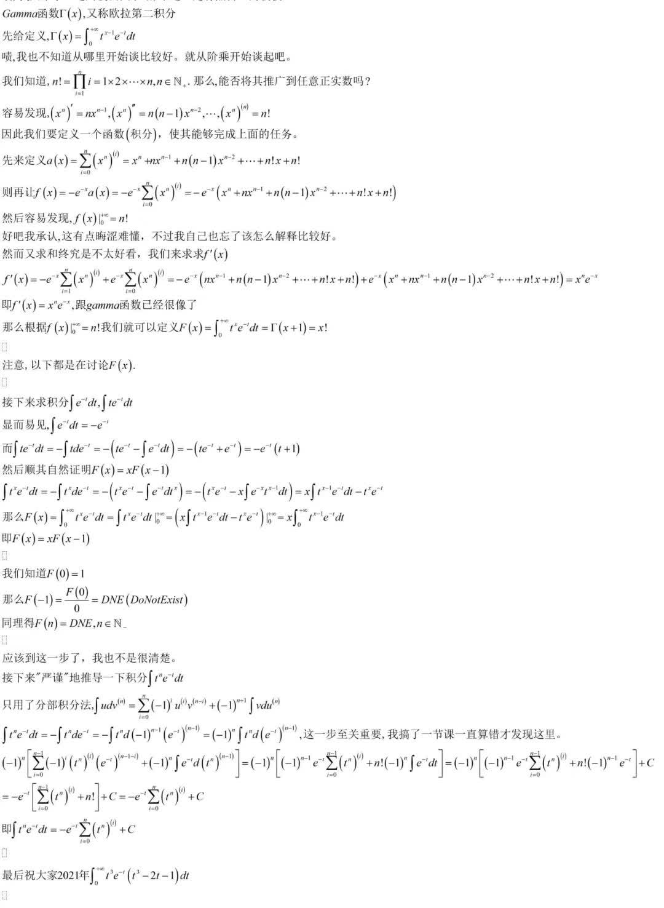

好，终于把坑填完了。总算跟上进度了。
不定积分
原函数
若 f(x) 在区间 I 有定义，且存在 F(x) 使
F′(x)=f(x)
则称 F(x) 为 f(x) 在区间 I 上的一个原函数。
显然若 F(x) 是 f(x) 的一个原函数，则 F(x)+C 也是 f(x) 的一个原函数。也就是说，原函数不唯一。
不定积分
设 f(x) 在区间 I 有定义，则 f(x) 的全体原函数称为 f(x) 的不定积分，记作
∫f(x)dx
由此，若 F(x) 是 f(x) 的一个原函数，则
∫f(x)dx=F(x)+C
根据课本，∫ 为积分符号，C 为任意常数，称为积分常数，f(x)dx 称为被积表达式，f(x) 称为被积函数，x 称为积分变量。
基本积分公式表
∫coshxdx=c1::sinhx+C
| 不定积分 |
结果 |
注意 |
| ∫0dx |
C |
- |
| ∫xμdx |
μ+1xμ+1+C |
μ=−1 |
| ∫x1dx |
ln∣x∣+C |
- |
| ∫axdx |
lnaax+C |
a>0 且 a=1 |
| ∫sinxdx |
−cosx+C |
- |
| ∫cosxdx |
sinx+C |
- |
| ∫sec2xdx |
tanx+C |
- |
| ∫csc2xdx |
−cotx+C |
不熟 |
| ∫1−x2dx |
arcsinx+C 或 −arccosx+C |
- |
| ∫1+x2dx |
arctanx+C 或 −arccotx+C |
- |
| ∫x2±a2dx |
lnx+x2±a2+C |
不熟 |
| ∫x2+a2dx |
a1arctanax+C |
不熟 |
| ∫a2−x2dx |
arcsinax+C |
a>0 |
| ∫sinhxdx |
coshx+C |
- |
| ∫coshxdx |
sinhx+C |
- |
基本积分方法
换元积分法
设 u=g(x) 是区间 I 上的可导函数，f(u) 在 g(I) 上有定义，则
∫f(g(x))g′(x)dx=∫f(u)du
分部积分法
我们知道导数的乘积法则 d(uv)=udv+vdu，两边同时积分，得到
∫d(uv)uv∫udv=∫udv+∫vdu=∫udv+∫vdu=uv−∫vdu
好，我们已经学会了分部积分法，那么试试看求积分
∫tne−tdt
尘封的记忆，让我找找以前的记录。
下图来自 2020 年 12 月 31 日 22:20 的空间说说。

Gamma 函数，又称「欧拉第二积分」，是阶乘函数的推广，定义为
Γ(x)=∫0+∞tx−1e−tdt
也就是说，我们只需求出积分 ∫txe−tdt 即可。
让我仿照当时的方法，用 LATEX 重写一遍（当时用的是 MathType，样子惨不忍睹）。
分部积分有
∫udv(n)=k=0∑n(−1)ku(k)v(n−k)+(−1)n+1∫vdu(n)
照抄时我误以为 u,v 是变量，其实 u,v 是函数。不妨把它们看作是关于 x 的函数，从而有
∫udv(n)=uv(n)−∫v(n)du=uv(n)−∫dxdv(n−1)du=uv(n)−∫dxdudv(n−1)=uv(n)−∫u(1)dv(n−1)
以此类推，则有上式成立。确实只用到了分部积分。
从而
∫tne−tdt=−∫tnde−t=−∫tnd((−1)n−1dt(n−1)d(n−1)e−t)=(−1)n∫tnd(dt(n−1)d(n−1)e−t)=(−1)n[k=0∑n−1(−1)k(dtkdktn)(dt(n−1−k)d(n−1−k)e−t)+(−1)n∫e−td(dt(n−1)d(n−1)tn)]=(−1)n[(−1)n−1e−tk=0∑n−1dtkdktn+(−1)nn!∫e−tdt]=(−1)n[(−1)n−1e−tk=0∑n−1(n−k)!n!tn−k+(−1)n−1n!e−t]+C=−e−t[k=0∑n−1(n−k)!n!tn−k+n!]+C=−e−tk=0∑n(n−k)!n!tn−k+C=−e−tk=0∑nk!n!tk+C
看不懂？我也看不懂，毕竟是我三年前写的东西了。待我有时间重新参悟一下，顺便看看有没有错。
参悟完了，其实很简单，没发现有错，同时把过程和结果改进了一下。
我高一还是蛮厉害的嘛（自恋）。
另外其实还可以改进一下过程，由于我高一知识有限而没能意识到，只不过为了和图片保持一致，还是使用高一的方法。口述一下更简单的方法：上面的方法实际上将 e−t 变成 n−1 阶的导数，从而使用分部积分进行积分，最后只需要求一个简单的 ∫e−tdt 即可。可见其实我还是思维比较狭隘，完全可以直接变成 ∫e−tdC=C，即视为 n 阶导数，从而只有前面的求和 k=0∑n(−1)k(dtkdktn)(dt(n−k)d(n−k)e−t) ，直接得到结果。
有理函数的积分
有理函数积分可以划归为 (x−a)k1 与 (x2+px+q)kMx+N 的积分。
(x−a)k1 的积分
显然有
∫(x−a)k1dx=⎩⎨⎧(1−k)1(x−a)1−k+C,ln∣x−a∣+C,k=1k=1
(x2+px+q)kMx+N 的积分
记 Ik1=∫(x2+px+q)kd(x2+px+q)，Ik2=∫(x2+px+q)k1dx，则
∫(x2+px+q)kMx+Ndx=∫(x2+px+q)k2M(2x+p)+(N−2Mp)dx=2M∫(x2+px+q)kd(x2+px+q)+(N−2Mp)∫(x2+px+q)k1dx=2MIk1+(N−2Mp)Ik2
对 Ik1，有
Ik1=∫(x2+px+q)kd(x2+px+q)=⎩⎨⎧ln(x2+px+q)+C,(1−k)1(x2+px+q)1−k+C,k=1k>1
对 Ik2，有
令 t=x+2p,a2=q−4p2，则 dx=dt,x2+px+q=t2+a2，从而
Ik2=∫(x2+px+q)k1dx=∫(t2+a2)k1dt
而
I12=∫(t2+a2)1dt=a1arctanat+C
注意到
dxd(t2+a2)kt=(t2+a2)k+1(1−2k)t2+a2
即
(t2+a2)kt=∫(t2+a2)k+1(1−2k)t2+a2dx+C
从而有
Ik2=∫(t2+a2)k1dx=∫(1−2k)(t2+a2)k+1(1−2k)(t2+a2)dt=∫(1−2k)(t2+a2)k+1(1−2k)t2+a2−2ka2dx=1−2k1∫(t2+a2)k+1(1−2k)t2+a2dx−1−2k2ka2∫(t2+a2)k+11dx=1−2k1((t2+a2)kt−2ka2Ik+12)
从而有递推
Ik+12=2ka21[(t2+a2)kt+(2k−1)Ik2]
这也正是课本上递推公式的由来。
由此说明了有理函数积分的可解性，但由于 Ik2 递推通项不知，因此实际求解相当复杂。
以下是 Mathematica 求解 Ik2 的结果
Integrate[1/(x^2+px+q)^k,x]//FullSimplify
|
x(x2+px+q)−k(px+qx2+1)k2F1(21,k;23;−px+qx2)
三角函数有理式的积分
借助万能代换，令 t=tan2x，则
⎩⎨⎧sinxcosxtanx=1+t22t=1+t21−t2=1−t22t
再由上面的结论知可解。
定积分
定义
设 f(x) 在区间 [a,b] 上有定义，将区间 [a,b] 分成 n 个小区间，其中第 i 个小区间为 [xi−1,xi]，xi−1 为第 i 个小区间的左端点，xi 为第 i 个小区间的右端点，记 x0=a，xn=b，记 Δxi=xi−xi−1，记 λi=x∈[xi−1,xi]inff(x)，μi=x∈[xi−1,xi]supf(x)，则
i=1∑nλiΔximax{Δxi}→0limi=1∑nλiΔxi⩽i=1∑nf(x)Δxi⩽i=1∑nμiΔxi⩽max{Δxi}→0limi=1∑nf(x)Δxi⩽max{Δxi}→0limi=1∑nμiΔxi
若左右两个极限存在且 max{Δxi}→0limi=1∑nλiΔxi=max{Δxi}→0limi=1∑nμiΔxi，则称 f(x) 在 [a,b] 上可积，记为 ∫abf(x)dx。
跟课本定义稍有不同，是 Copilot 给的定义，我觉得比课本的好一点。
同样地有
∫abf(x)dx=max{Δxi}→0limi=1∑nf(ξi)Δxi
其中 ξi∈[xi−1,xi]。这就是课本的定义。
(1) 称为黎曼和，∫abf(x)dx 称为黎曼积分，简称定积分。
定积分的性质
若 f(x) 在 [a,b] 上可积，则 f(x) 在 [a,b] 上有界。
这里我想到个例子 ∫01x1dx，f(x) 在 [0,1] 上无界，但是 ∫01x1dx=2x01=2，这是为什么呢？
查了一下，原来是因为 ∫01x1dx 是所谓的瑕积分，是用定积分的极限来表示的，因此这与「定积分可积必有界」不矛盾。
积分中值定理
设 f(x) 在 [a,b] 上连续，g(x) 在 [a,b] 不变号，则存在 ξ∈[a,b] 使
∫abf(x)g(x)dx=f(ξ)∫abg(x)dx
证明：
由于 g(x) 在 [a,b] 不变号，不妨设 g(x)⩾0，则
(x∈[a,b]inff(x))g(x)⩽f(x)g(x)⩽(x∈[a,b]supf(x))g(x)
从而
x∈[a,b]inff(x)∫abg(x)dx⩽∫abf(x)g(x)dx⩽x∈[a,b]supf(x)∫abg(x)dx
若 ∫abg(x)dx=0，则 ∫abf(x)g(x)dx=0，此时 ξ 可取任意值。
否则，由于 f(x) 在 [a,b] 上连续，因此存在 ξ∈[a,b] 使 f(ξ)=∫abg(x)dx∫abf(x)g(x)dx∈[x∈[a,b]inff(x),x∈[a,b]supf(x)]，从而
∫abf(x)g(x)dx=f(ξ)∫abg(x)dx
若取 g(x)≡1，则有
∫abf(x)dx=f(ξ)(b−a)
从而定义广义平均值 yˉ=b−a1∫abf(x)dx。
微积分基本定理
微积分学第一基本定理
设 f(x) 在 [a,b] 上连续，则 f(x) 在 [a,b] 上可积。
即连续函数的原函数或不定积分必存在。
微积分学第二基本定理（牛顿-莱布尼茨公式）
设 f(x) 在 [a,b] 上连续，F(x) 是 f(x) 在 [a,b] 上的一个原函数，则
∫abf(x)dx=F(b)−F(a)
数值积分
设 f(x) 在 [a,b] 连续。
矩形法
将 [a,b] 均分成 n 个小区间，其中第 i 个小区间为 [xi−1,xi]，xi−1 为第 i 个小区间的左端点，xi 为第 i 个小区间的右端点，记 x0=a，xn=b，记 Δxi=xi−xi−1，则
∫abf(x)dx≈i=1∑nf(xi)Δxi=nb−ai=1∑nf(xi)
也可以取 f(xi−1)，此时
∫abf(x)dx≈nb−ai=1∑nf(xi−1)
设 f′(x) 在 [a,b] 连续，记余项
Rn=∫abf(x)dx−nb−ai=1∑nf(xi)
则有
∣Rn∣⩽2n(b−a)2M1
其中 M1=x∈[a,b]max∣f′(x)∣。
梯形法
使用梯形面积近似曲边梯形面积，即使用 f(xi−1) 与 f(xi) 的平均值 2f(xi−1)+f(xi) 代替 f(xi)，则
∫abf(x)dx≈i=1∑n2f(xi−1)+f(xi)Δxi=2nb−ai=1∑n[f(xi−1)+f(xi)]=nb−a[2f(x0)+f(xn)+i=1∑n−1f(xi)]
设 f′′(x) 在 [a,b] 连续，记余项
Rn=∫abf(x)dx−nb−a[2f(x0)+f(xn)+i=1∑n−1f(xi)]
则有
∣Rn∣⩽12n2(b−a)3M2
其中 M2=x∈[a,b]max∣f′′(x)∣。
（抛物线法）辛普森法
使用抛物线面积近似曲边梯形面积。不妨设 y=ax2+bx+c 通过 (x0,y0),(2x0+x2,y1),(x2,y2)，则
∫x0x2ydx=6x2−x0(y0+4y1+y2)
将 [a,b] 均分成 2n 个小区间，其中第 i 个小区间为 [x2i−2,x2i]，记 x0=a，x2n=b，则 Δx=2nb−a，则 [x2i−2,x2i] 上两个曲边梯形的近似值可以看作是 [x2i−2,x2i] 上一个抛物线的近似值，从而有
3Δx[f(x2i−2)+4f(x2i−1)+f(x2i)]=6nb−a[f(x2i−2)+4f(x2i−1)+f(x2i)]
累加有
∫abf(x)dx≈i=1∑n6nb−a[f(x2i−2)+4f(x2i−1)+f(x2i)]=6nb−a[f(x0)+f(x2n)+4i=1∑nf(x2i−1)+2i=1∑n−1f(x2i)]
设 f(4)(x) 在 [a,b] 连续，记余项
Rn=∫abf(x)dx−6nb−a[f(x0)+f(x2n)+4i=1∑nf(x2i−1)+2i=1∑n−1f(x2i)]
则有
∣Rn∣⩽2880n4(b−a)5M4
其中 M4=x∈[a,b]maxf(4)(x)。
定积分的应用
笛卡尔坐标系平面图形面积
只需记住 f(x),g(x),x=a,x=b 围成的平面图形面积为
∫ab(f(x)−g(x))dx
同时不一定要拘束在 x，若是从 x 轴角度上看不是个函数，从 y 轴角度上看是个函数，可以从 y 轴的角度进行积分以简化运算（否则要将 x 轴角度的图形分成多个部分进行积分）。
极坐标系平面图形面积
取角度微元 dθ，有
dA=21ρ2(θ)dθ
从而
A=21∫αβρ2(θ)dθ
旋转体体积
设 f(x) 在 [a,b] 上连续，将 [a,b] 绕 x 轴旋转一周，得到旋转体，其体积为
V=π∫abf2(x)dx
即取以 x 轴为法向量的圆盘微元，体积
dV=Sdx=πf2(x)dx
设 f(x) 在 [a,b] 上连续，将 [a,b] 绕 y 轴旋转一周，得到旋转体，其体积为
V=2π∫abxf(x)dx
即取法向量为 y 轴的圆筒微元，体积
dV=Chdx=2πxf(x)dx
平面曲线弧长
设 y=f(x) 在 [a,b] 上连续可导，则其弧长为
L=∫ab1+(f′(x))2dx
化曲为直，弧长微元长度
dL=1+(f′(x))2dx
设曲线由参数方程
{x=φ(t)y=ψ(t),α⩽t⩽β
确定，则换元积分有弧长
L=∫αβ(φ′(t))2+(ψ′(t))2dt
若曲线由极坐标方程
ρ=ρ(θ),α⩽θ⩽β
确定，且 ρ(θ) 在 [α,β] 上连续可导，则其弧长为
L=∫αβ(ρ(θ))2+(ρ′(θ))2dθ
写成以极角 θ 为参数的参数方程
{x=ρ(θ)cosθy=ρ(θ)sinθ,α⩽θ⩽β
有
x′2+y′2=+=[ρ′(θ)cosθ−ρ(θ)sinθ]2[ρ′(θ)sinθ+ρ(θ)cosθ]2(ρ′(θ))2+(ρ(θ))2
从而有弧微分
dsdsds=1+(f′(x))2dx=(φ′(t))2+(ψ′(t))2dt=(ρ(θ))2+(ρ′(θ))2dθ
椭圆积分
对于 k∈(0,1),h∈C，有三类椭圆积分
第一类椭圆积分
F(k,θ)=∫0θ1−k2sin2φdφ
第二类椭圆积分
F(k,θ)=∫0θ1−k2sin2φdφ
第三类椭圆积分
G(k,θ,h)=∫0θ(1+hsin2θ)1−k2sin2θdθ
椭圆积分没有初等函数有限的表示形式的原函数，只能用数值积分进行计算。
之所以叫椭圆积分，是因为在计算椭圆周长时会出现这样的积分。椭圆面积可以比较容易地计算，但周长则需要求复杂的椭圆积分，没有初等函数有限的表示形式的原函数，只能用数值积分进行计算。
也就是说积分时看到如上形式就可以死心了，不要死磕。
旋转曲面面积
设 y=f(x) 在 [a,b] 上连续可导，将 f(x) 绕 x 轴旋转一周，得到旋转曲面，其面积为
Sx=2π∫abf(x)1+(f′(x))2dx
由微元面积
dS=Cdx=2πf(x)1+(f′(x))2dx
设 y=f(x) 在 [a,b] 上连续可导，将 f(x) 绕 y 轴旋转一周，得到旋转曲面，其面积为
Sy=2π∫abx1+(f′(x))2dx
由微元面积
dS=Cdx=2πx1+(f′(x))2dx
设曲线由参数方程
{x=φ(t)y=ψ(t),α⩽t⩽β
确定，则
SxSy=2π∫αβψ(t)(φ′(t))2+(ψ′(t))2dt=2π∫αβφ(t)(φ′(t))2+(ψ′(t))2dt
若曲线由极坐标方程
ρ=ρ(θ),α⩽θ⩽β
确定，且 ρ(θ) 在 [α,β] 上连续可导，则其面积为
SxSy=2π∫αβρ(θ)sinθ(ρ(θ))2+(ρ′(θ))2dθ=2π∫αβρ(θ)cosθ(ρ(θ))2+(ρ′(θ))2dθ
曲率
曲率在我之前的博文就已经提及了，并给出了公式的推导过程。
当时的思路是用一个「曲率圆」去近似曲线，所得到的曲率圆的半径就是曲率半径，而曲率就是曲率圆的半径的倒数。
课本上给出了曲率的另一种阐述。
在函数 f(x) 某处（x0）切线倾斜角 α 满足
tanα=f′(x0)
给 x0 以增量 Δx，从而有倾斜角 α 有增量
Δα=arctanf′(x0+Δx)−arctanf′(x0)
在 Δx 的增量中，有弧长的增量 Δs。
注意到对于相同的弧长增量，若 Δα 越大，则曲线越弯曲，因此定义平均曲率
κˉ=ΔsΔα
并定义曲率
κ=Δs→0limΔsΔα
并记曲率半径
R=κ1
而
∣Δs∣=∫x0x0+Δx1+(f′(t))2dt
有
Δx→0limΔxΔs=1+(f′(x0))2
而
Δx→0limΔxΔα=α′(x0)=1+(f′(x0))2f′′(x0)
从而有
κ=(1+(f′(x0))2)3/2∣f′′(x0)∣
若曲线由参数方程
{x=φ(t)y=ψ(t)
确定，则
κ=[(φ′(t))2+(ψ′(t))2]3/2∣φ′(t)ψ′′(t)−φ′′(t)ψ′(t)∣
对 A(x0,f(x0)) 与 B(x0+Δx,f(x0+Δx)) 处切线作垂线，交于一点 P。
若 Δx→0，可近似认为弧长微元为圆的一部分，从而有
{PA=PB=R∠APB=Δα
从而有
Δs=RΔα
也就是我一开始的思路。
κ（kappa）是 Copilot 给的提示，课本上用的是 K，我之前用的是 ρ，但由于 Copilot 是我大爹 κ 更好看，我就用 κ 了。
广义积分
至目前为止探讨的定积分都是在有限的区间 [a,b] 上进行的，同时函数在这个区间上还有界。但我也提到过了对于 ∫01x1dx 这样的积分，似乎可以使用牛顿-莱布尼茨公式得到一个有限的结果。因此，对于无限区间以及无界函数的积分的研究就很有必要。
定义
以下两类积分统称为广义积分（瑕积分、反常积分）：
- 无穷区间的积分
- 无界函数的积分
无穷区间上的积分
设 f(x) 在区间 [a,+∞) 上有定义，且 ∀b∈(a,+∞),f(x) 在 [a,b] 上可积。则定义无穷区间上的广义积分
∫a+∞f(x)dx=b→+∞lim∫abf(x)dx
若该极限存在，则称该广义积分收敛，否则称其发散。称 +∞ 为该广义积分的瑕点。
同理，可定义 (−∞,a] 上的广义积分 ∫−∞af(x)dx，及 (−∞,+∞) 上的广义积分 ∫−∞+∞f(x)dx：
∫−∞+∞f(x)dx=∫−∞cf(x)dx+∫c+∞f(x)dx
其中 c 为任意常数。
因此，只有当 ∫−∞cf(x)dx 和 ∫c+∞f(x)dx 均收敛时，∫−∞+∞f(x)dx 才收敛。
c 的选取并不影响广义积分的收敛性，因为
∫−∞cf(x)dx+∫c+∞f(x)dx=∫−∞cf(x)dx+(∫cdf(x)dx+∫d+∞f(x)dx)=(∫−∞cf(x)dx+∫cdf(x)dx)+∫d+∞f(x)dx=∫−∞df(x)dx+∫d+∞f(x)dx
于是有一个很著名的问题。
求广义积分
∫−∞+∞arctanxdx
很容易这样想，arctanx 是奇函数，而且 ∀m∈R,∫−mmarctanxdx=0，从而
∫−∞+∞arctanxdx=m→+∞lim∫−mmarctanxdx=0
这样做是错误的，根据广义积分的定义可知，∫−∞+∞arctanxdx 的收敛性取决于 ∫−∞carctanxdx 和 ∫c+∞arctanxdx 的收敛性，显然这两个极限不存在，因此 ∫−∞+∞arctanxdx 发散。
这样的做法的错误在于，上下限的两个 ∞ 并不是一个无穷大，而错误做法假定了这两个无穷大是一样的。而例如 x→0+limx1=+∞,x→0limx21=+∞，这两个都是正无穷大，但显然后者的增长速度要比前者快得多。
不过这个假定无穷大收敛速率相同的值有个名字，叫做柯西主值，记作 P∫−∞+∞f(x)dx 或 PV∫−∞+∞f(x)dx，那么有
P∫−∞+∞arctanxdx=m→+∞lim∫−mmarctanxdx=0
无界函数的积分
设 f(x) 在区间 [a,b] 上有定义，且 ∀x∈[a,b],f(x) 在 x 处的邻域内可积。若 f(x) 在 a 的右邻域内无界，则定义无界函数的广义积分
∫abf(x)dx=ε→0+lim∫a+εbf(x)dx
若该极限存在，则称该广义积分收敛，否则称其发散。称 a 为该广义积分的瑕点（奇点）。
同理，可定义 b 为奇点时无界函数的广义积分
∫abf(x)dx=ε→0+lim∫ab−εf(x)dx
若 a,b 均为奇点，则定义
∫abf(x)dx=ε→0+lim∫a+εcf(x)dx+η→0+lim∫cb−ηf(x)dx
其中 c 为任意常数。
因此，只有当 ∫acf(x)dx 和 ∫cbf(x)dx 均收敛时，∫abf(x)dx 才收敛。
广义牛顿-莱布尼茨公式、广义换元积分公式及广义分部积分公式就不再赘述了。